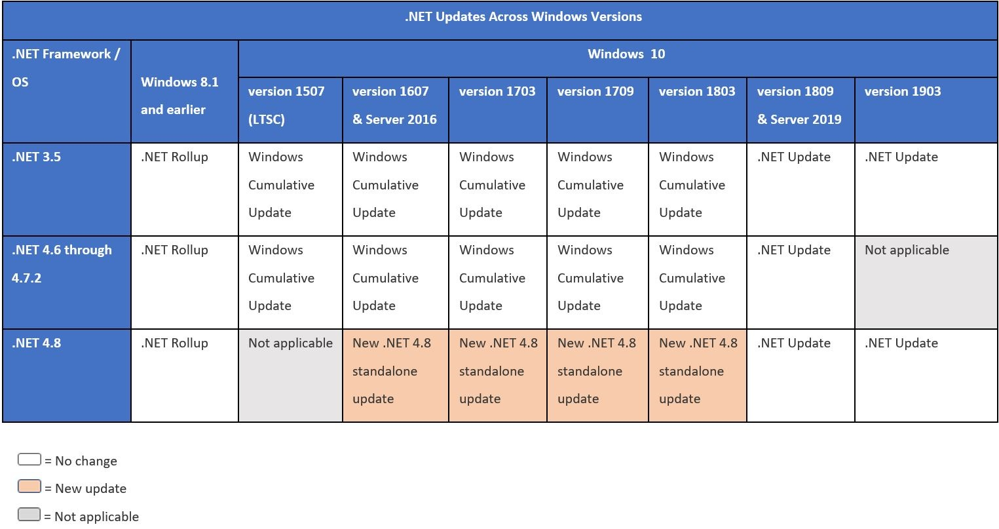

こんにちは、Japan Developer Support Core チームの上原です。 .NET Framework 4.x (.NET Framework 4 以降のバージョン) の更新プログラムについて解説させていただきます。 なお、.NET Framework 4.x の前バージョンとして .NET Framework 3.5 が、後継製品として .NET や .NET Core がありますが、更新プログラムの構成は大きく異なっておりますので、本記事は .NET Framework 4.x を対象にしておりますことご注意ください。
はじめに
現在(2025年 9月) サポートされている全ての OS において、初期状態でいずれかのバージョンの .NET Framework 4.x がプレインストールされており、必要に応じて更新プログラムを適用する必要があります。 ロールアップと呼ばれる .NET Framework 更新プログラムは、様々な環境や用途を想定し設計されておりますので、本記事ではいくつかの観点から更新プログラムの構成や、適用に関する注意事項について説明させていただきます。
OS バージョンと .NET Framework
.NET Framework 4.x は、OS の一部としていずれかのバージョンがプレインストールされており、より新しいバージョンにアップデートすることも可能です。 より新しいバージョンをインストールした場合にはインプレースアップグレードされ、.NET Framework 4.x ではシステムにインストールされている最も新しいバージョンのみが有効になりますので、複数のバージョンを同時に利用することはできません。
一方で、OS にプレインストールされているバージョン未満にダウングレードすることはできません。 .NET Framework 4.x のアップグレードとダウングレードについて、以前のブログ記事で詳細に解説しておりますので、良ければこちらもご覧ください。
.NET Framework バージョンの確認方法
システムにおける現在の .NET Framework バージョンは、レジストリ値 HKEY_LOCAL_MACHINE\SOFTWARE\Microsoft\NET Framework Setup\NDP\v4\Full の Release の値から判断することが可能です。 Release の値は、.NET Framework バージョンごとに範囲が定められており、例えば 528040 以上、533320 未満の値であれば、.NET Framework 4.8 であると判断できます。
詳細な確認方法は、こちらのドキュメント に紹介されていますので、こちらもご覧ください。
(注意) 同レジストリパスに Version も存在しますが、こちらは現在の .NET Framework バージョンを示しておりませんので、バージョンの判別には Relase を参照ください。
更新プログラムの提供形態
.NET Framework の更新プログラムは、OS および .NET Framework バージョンごとに提供されております。
以前の OS バージョンでは個別のセキュリティ更新ごとに更新プログラムが用意されている場合もありましたが、現在サポートされている全ての OS バージョンにおいて、原則として .NET Framework 更新プログラムは累積の形式で提供されております。 そのため、ある時期にリリースされた .NET Framework の更新プログラムは、それ以前にリリースされた修正を全て含んでいますので、適用する更新プログラムの抽出や順番を気にする必要はありません。
次に、更新プログラムの配布形態として、大きく分けて .NET Framework 単体の更新プログラムとして提供されている場合と、OS の更新プログラムに含まれて提供されている場合があります。
主に、Windows 10 version 1803 以前のクライアント OS および Windows Server 2016 以前のサーバー OS であり、かつ、.NET Framework 4.7.2 以下の場合には、OS の更新プログラムに含まれて提供されています。 それ以外の場合、.NET Framework 4.8 以上、あるいは、Windows 10 version 1809 以降のクライアント OS、および Windows Server 2019 以降のサーバー OS では、OS とは別に .NET Framework の更新プログラムとして提供されております。
少し古い記事ですが、.NET Framework 4.8 のリリース記事 に、上記を示した表がありますので、参考までにご紹介します。 ここでは、Windows 11 などの新しい OS バージョンや、.NET Framework 4.8.1 の記載はありませんが、現在までのところ表の最も新しい 1903 や .NET 4.8(.NET Framework 4.8) と提供形態に変更はありません。

セキュリティ修正について
.NET Framework 更新プログラムでは、大きくわけて脆弱性などのセキュリティに関する修正と、機能改善などのセキュリティ以外の修正に分類されて提供されています。
例えば、現在 2025年 9月時点の状況を例にご説明しますと、最新の 2025年 9月の更新プログラムのリリースノート の Security improvements には、今回のアップデートにおいて新たにセキュリティに関する修正が含まれていないことが明記されています。 この場合、2025年 9月の .NET Framework 更新プログラムの分類(Classification) は 更新(Updates) として提供されます。
次に、リリースノートを遡って確認すると、2025年 1月の更新プログラム の Security improvements に脆弱性への修正が記載されています。 そのため、2025年 9月現在、最新のセキュリティ修正としては 2025年 1月の更新プログラムであり、更新プログラムの分類(Classification) は セキュリティ更新(Security Updates) となっています。
もしセキュリティに関する修正が入っている場合のみ更新プログラムを適用したい、といった要件がある場合には、上記のリリースノートや更新プログラムの分類を元に、更新プログラムの適用可否をご判断ください。
親子 KB の話
.NET Framework の更新プログラムは、OS および .NET Framework バージョンごとに提供されており、それぞれに KB 番号が定められていますが、複数の .NET Framework バージョンむけの更新プログラムを、別の KB 番号で表記し、複数バージョンむけの更新プログラムとして提供されている場合があります。 なお、本ブログ記事では便宜的に、前者の実際にインストールされる OS および .NET Framework ごとの更新プログラムを 子 KB、後者の複数の更新プログラムを包含した更新プログラムを親 KB と表記することにします。
今回は、現在最新の 2025年 9月リリースの Windows 10 version 22H2 むけの更新プログラム を例に、各更新プログラムの親子 KB の関係について説明します。
- (親 KB) Windows 10 version 22H2 むけ KB5065956
- (子 KB) .NET Framework 3.5, 4.8 KB5064399
- (子 KB) .NET Framework 3.5, 4.8.1 KB5064400
2025年 9月リリースの Windows 10 version 22H2 むけ更新プログラムは、.NET Framework 4.8 むけ KB5064399 と、4.8.1 むけ KB5064400 が提供されています。 なお、.NET Framework 3.5 は独立してインストールが可能なので、それぞれの更新プログラムに含まれています。
Windows 10 version 22H2 において更新プログラムを適用する場合には、システムの .NET Framework バージョンに応じて、KB5064399 か KB5064400 のいずれかの子 KB をインストールする必要があります。 もし手動でインストールする場合には、システムの .NET Framework バージョンを確認の上、バージョンに合致する子 KB をインストールします。
一方で、親KB である KB5065956 は、バージョンが異なる 2つの子 KB を内包した更新プログラムとして提供されており、主に WSUS や MECM などから多数の端末に対して配信するといったシナリオで利用することが可能です。 親 KB が端末に配信されると、各端末ごとにインストールされている .NET Framework バージョンを判別し、.NET Framework 4.8 むけ KB5064399 か、4.8.1 むけ KB5064400 かの、いずれかの子 KB が実際にインストールされます。
その場合、インストール時の更新プログラムは親 KB の KB 番号として表示される場合がありますが、各端末でインストールされている更新プログラムとしては子 KB の KB 番号が表示されますので注意が必要です。
参考情報
本記事は 2025年 9月の執筆当時の情報を元に記載していますが、最新の情報はブログやリリースノートからご確認ください。
また、累積型の .NET Framework ロールアップが導入された経緯や背景については、2016年の当時の情報が参考になりますので、必要に応じてご参照ください。
本ブログの内容は弊社の公式見解として保証されるものではなく、開発・運用時の参考情報としてご活用いただくことを目的としています。もし公式な見解が必要な場合は、弊社ドキュメント (https://learn.microsoft.com や https://support.microsoft.com) をご参照いただくか、もしくは私共サポートまでお問い合わせください。